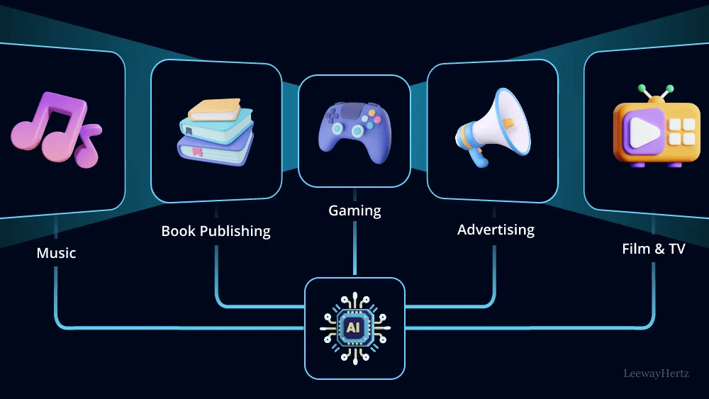
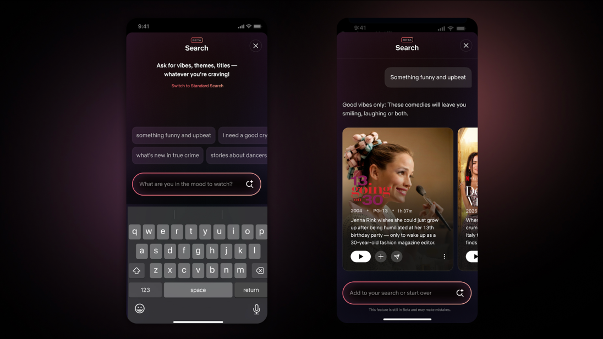

AI Transforming Entertainment Experiences
Artificial Intelligence is redefining how audiences engage with films, music, and streaming platforms. Below are several examples of its impact:

Overview: AI integration across Music, Gaming, Advertising, and Film
- Content Suggestions: Streaming services like Netflix employ AI to recommend shows and movies tailored to user preferences. (Litslink)
- Generative Tools: AI assists in film production, from de-aging actors to creating synthetic scenes. (CNBC)
- Global Recommender Systems: Algorithms personalize searches and recommendations across different regions. (Netflix Research)
- User Interface Enhancements: AI improves navigation and browsing experiences, making content discovery more intuitive. (Netflix About)

In Practice: Natural language search and personalized movie recommendations
By tailoring entertainment to individual tastes, AI creates more immersive and engaging experiences.